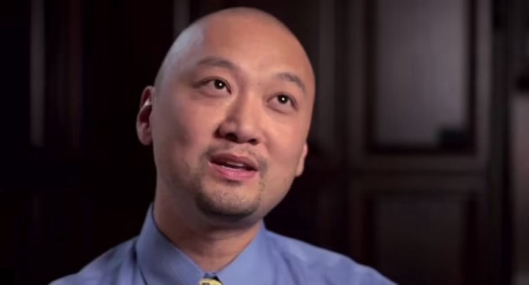
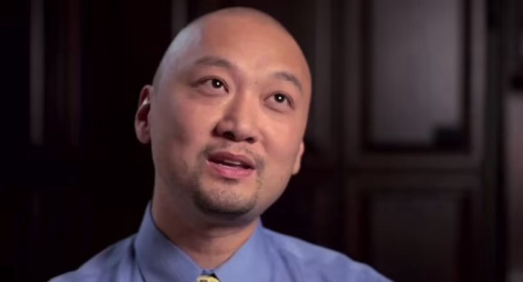

Doctor Imprisoned for Attempting to Hire a Hitman
~2 min read | Published on 2024-01-19, tagged Murder-for-Hire, Sentenced using 403 words.
A Georgia doctor was sentenced to more than seven years in prison for trying to hire a hitman on the dark web to murder his girlfriend.

Dr. James Wan, 54, was sentenced after he admitted he sent bitcoin worth approximately $16,000 to a dark web murder-for-hire site as payment for the murder of his girlfriend.
Investigations by the FBI revealed that Wan accessed the murder-for-hire site and placed the order on April 18, 2022. In the order details, Wan included his girlfriend's name, address, and Facebook account, as well as her vehicle's description and license plate. He also asked the admin to make sure the hit was made to look like a robbery gone wrong.
He deposited approximately $8,000 in Bitcoin to the site's escrow as a downpayment for the order. Two days later, Wan contacted the site's admin and asked why the deposit hadn't reflected in his account. The next day, the admin asked Wan for the Bitcoin address he had used to make the deposit. Wan provided a screenshot of the transaction and the administrator said that the address Wan had used didn't belong to the site.
Wan accepted he had deposited to the wrong address and deposited an additional $8,000 in bitcoin to the site. The admin confirmed the deposit was made to the correct address and updated Wan's account. The admin then asked Wan whether he wanted the hit done as an "accident or normal shooting." Wan responded, "accident is better."
On April 29, Wan deposited another $8,000 in Bitcoin to complete the order's payment. He kept enquiring about how fast the hit would be done. On May 10, Wan deposited approximately $1,200 in Bitcoin into his escrow on the site to cover the difference caused by Bitcoin's price drop.
The FBI contacted Wan's girlfriend after learning of the murder-for-hire plot and placed her under their protection. They then questioned Wan.
Wan told the investigators he had placed the order and had been checking on its status daily. A review of Wan's Bitcoin wallet confirmed he had paid for the order. He canceled the order at the end of the questioning.
Wan pleaded guilty to one count of using a facility of interstate commerce in the commission of murder-for-hire on October 17, 2023.
Wan was sentenced to seven years and three months in prison on January 18, 2021. Wan's prison term will be followed by two years of supervised release.

Dr. James Wan
Dr. James Wan, 54, was sentenced after he admitted he sent bitcoin worth approximately $16,000 to a dark web murder-for-hire site as payment for the murder of his girlfriend.
Investigations by the FBI revealed that Wan accessed the murder-for-hire site and placed the order on April 18, 2022. In the order details, Wan included his girlfriend's name, address, and Facebook account, as well as her vehicle's description and license plate. He also asked the admin to make sure the hit was made to look like a robbery gone wrong.
He deposited approximately $8,000 in Bitcoin to the site's escrow as a downpayment for the order. Two days later, Wan contacted the site's admin and asked why the deposit hadn't reflected in his account. The next day, the admin asked Wan for the Bitcoin address he had used to make the deposit. Wan provided a screenshot of the transaction and the administrator said that the address Wan had used didn't belong to the site.
Wan accepted he had deposited to the wrong address and deposited an additional $8,000 in bitcoin to the site. The admin confirmed the deposit was made to the correct address and updated Wan's account. The admin then asked Wan whether he wanted the hit done as an "accident or normal shooting." Wan responded, "accident is better."
On April 29, Wan deposited another $8,000 in Bitcoin to complete the order's payment. He kept enquiring about how fast the hit would be done. On May 10, Wan deposited approximately $1,200 in Bitcoin into his escrow on the site to cover the difference caused by Bitcoin's price drop.
The FBI contacted Wan's girlfriend after learning of the murder-for-hire plot and placed her under their protection. They then questioned Wan.
Wan told the investigators he had placed the order and had been checking on its status daily. A review of Wan's Bitcoin wallet confirmed he had paid for the order. He canceled the order at the end of the questioning.
Wan pleaded guilty to one count of using a facility of interstate commerce in the commission of murder-for-hire on October 17, 2023.
Wan was sentenced to seven years and three months in prison on January 18, 2021. Wan's prison term will be followed by two years of supervised release.